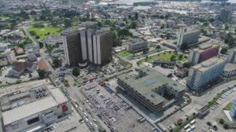

Port Harcourt is one of the major cities in southern Nigeria and the capital of Rivers State. It is known as the "Garden City" because of its greenery and beautiful environment. The city is an important center for Nigeria's oil and gas industry.
Port Harcourt has a vibrant culture, delicious local cuisine, and many recreational spots. It is home to diverse communities and serves as a hub for business, education, and tourism in the Niger Delta region.

